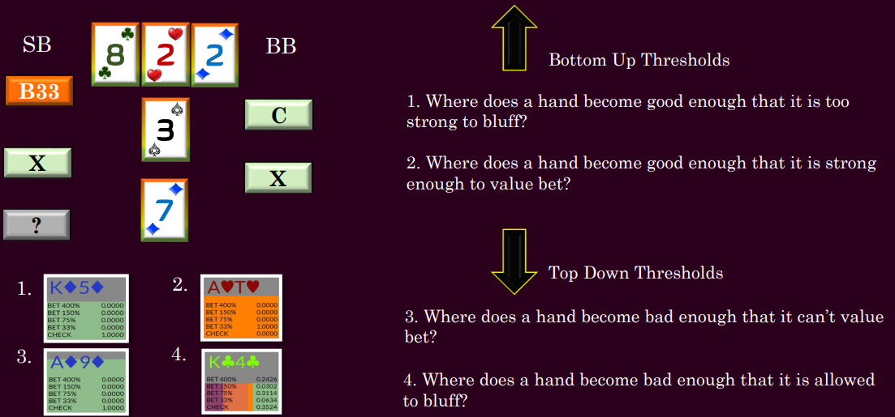
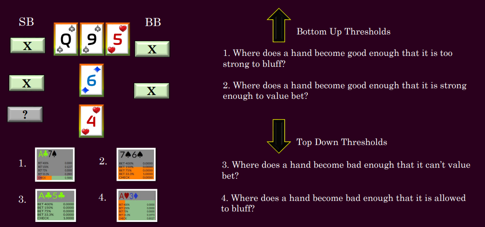
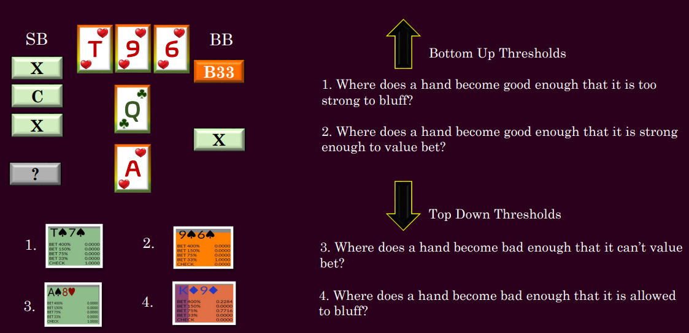

Still Lake textures commonly lead to players underrating how strong their hand is. This is because the more common choppy sea textures often serve as our template for making quick value judgments. Hands are much stronger than they first appear in the still lake. This has a striking effect on our range thresholds.
Choppy Sea textures are the most common and students are generally better at evaluating hand strength on them, but that said, there is still a large degree of fallibility in most people's hand evaluation because the action sequence can have such a strong effect.
Tsunami Textures shake ranges up dramatically. Newer players can be prone to overvaluing marginal hands on these boards, again based on how good they would be in the more common choppy sea textures.
Raising the river works much the same. In general our thresholds will be higher up in our range as we are already facing a polarised range.
Polarised Ranges contain higher concentrations of two types of hands we do not want to value bet thinly against, very high equity hands and very low equity hands, which are either folding or beating our thin value bets.